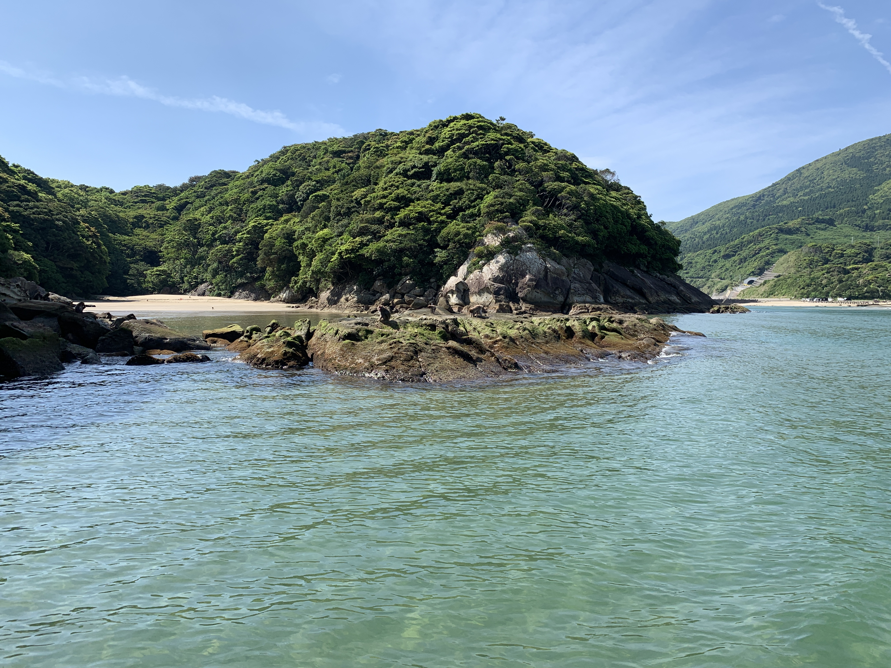
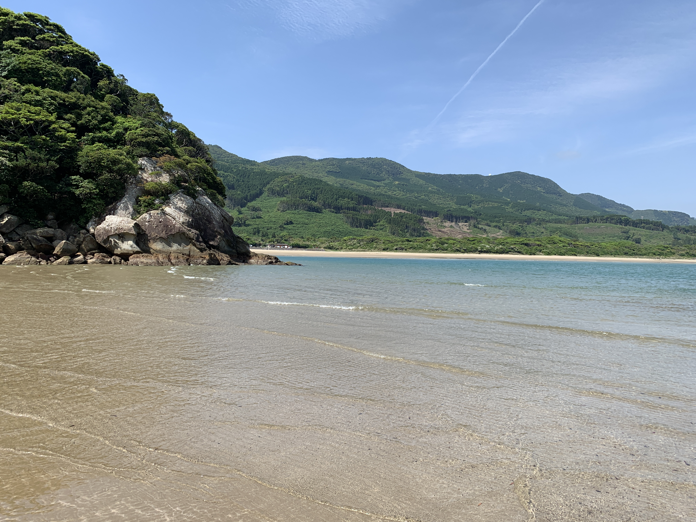

犬山・日本モンキーセンターでの視線実験
2026年7月10日の投稿。視線を移すタイミングを種間で比べる実験を紹介しています。
Instagramは、ボタンを押すまで読み込みません。
犬山・日本モンキーセンターでの視線実験をInstagramで見る ↗LAB LIFE
観察から計測、議論へ。実際の研究風景を通して、問いが形になるまでの過程を紹介します。
研究の舞台裏、研究仲間との時間。写真と投稿で、研究の日常を少し紹介します。
FIELD SCENES
幸島の風景写真（2026年4月）。研究の周囲に広がる自然環境を紹介します。


以下は研究の進め方の例です。固定の時間割や現在の活動予定ではありません。
行動と状況を記録し、気づきを共有する。
必要なデータと計測方法を考え、試す。
結果を読み、次に確かめたいことを探す。